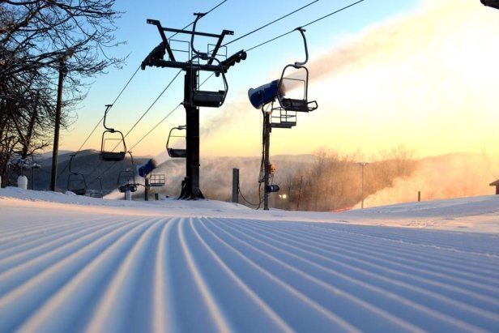
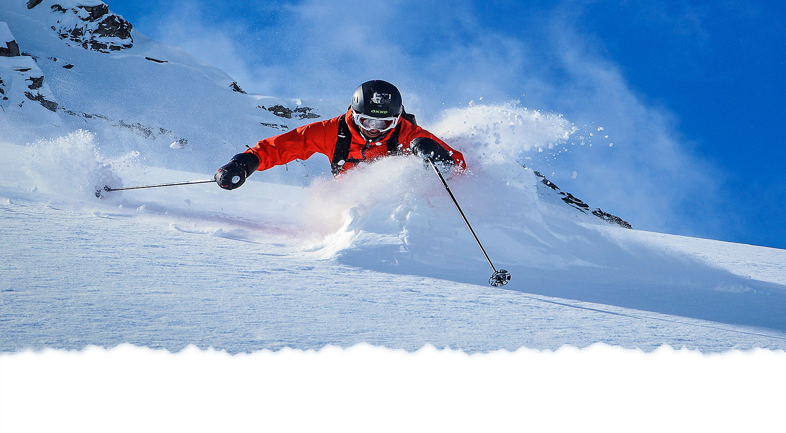

Skiing
BACKGROUND ON SKIING
Skiing, or traveling over snow on skis, has a history of at least five millennia. The earliest archaeological examples of skis were found in Russia and date to 5000 BCE. Although modern skiing has evolved from beginnings in Scandinavia, 10,000-year-old wall paintings suggest use of skis in the Xinjiang region of what is now China. Originally purely utilitarian, starting in the mid-1800s skiing became a popular recreational activity and sport, becoming practiced in snow-covered regions worldwide, and providing crucial economic support to purpose-built ski resorts and communities.

EQUIPMENT TO BUY
Skis (either Backcountry Skis, Powder Skis, All-Mountain, or Race Skis)
Bindings for your Skis
Ski Boots
Helmet or hat (recomended to wear a helmet)
Goggles (Brands: Oakley, Smith, Briko, POC, UVEX)
Gloves
Jacket
Snow Pants
PLACES TO GO ON THE EAST COAST
.jpg) Holiday Valley (Ellicottville, NY)
Kissing Bridge (Glenwood, NY)
Bristol Mountian (Bristol, NY)
Toggenburg Mountian (Fabius, NY)
White Face (Lake Placid, NY)
GORE Mountian (North Creek, NY)
Sugarbush Resort (Warren,VT)
Stratton (South Londonderry,VT)
Okemo Mountain (Ludlow, VT)
Killington Mountain (Rutland, VT)
Sugarloaf Mountain (Carrabassett Valley, Maine)
Holiday Valley (Ellicottville, NY)
Kissing Bridge (Glenwood, NY)
Bristol Mountian (Bristol, NY)
Toggenburg Mountian (Fabius, NY)
White Face (Lake Placid, NY)
GORE Mountian (North Creek, NY)
Sugarbush Resort (Warren,VT)
Stratton (South Londonderry,VT)
Okemo Mountain (Ludlow, VT)
Killington Mountain (Rutland, VT)
Sugarloaf Mountain (Carrabassett Valley, Maine)
PLACES TO GO ON THE WEST COAST

Aspen Snowmass (Aspen, CO)
Vail-Beaver Creek (Vail, CO)
Breckenridge (Breckenridge, CO)
Park City Mountain Resort (Park City, UT)
Deer Valley Resort (Park City, UT)
Jackson Hole (Jackson, WY)
Telluride (Telluride,CO)
Copper (Summit County, CO)
Snowbasin (Huntsville, UT )
Alta (Alta, UT)
Squaw Valley (Olympic Valley, CA)